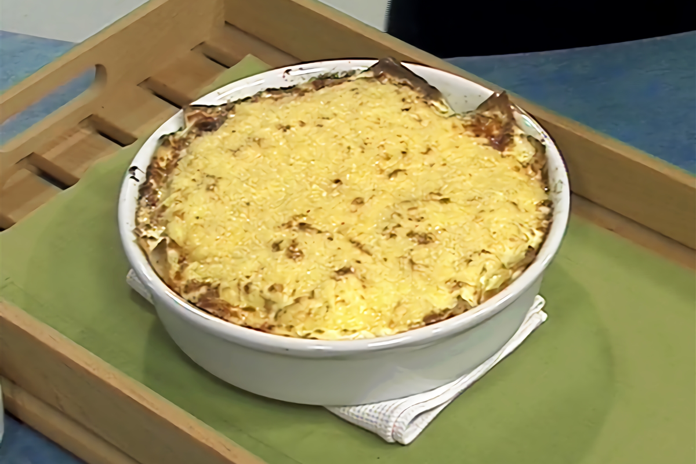

Lasagna

Este plato es uno de mis favoritos y esta version vegetariana es mucho mas saludable. La lasagna es una plato de
pasta, originario de Italia y basicamente consiste en una serie de capas, una encima de otra y entre las cuales
es posible poner el relleno que mas se adepte a nuestro gusto. Esto ultimo la hace versatil.
Ingredientes:
Relleno
- Manteca, 50 g.
- Queso Cheddar, 200 g.
- Aceite de oliva, cantidad necesaria
- Zapallo, 500 g.
- Hongos frescos, 500 g.
- Sal y pimienta, a gusto
- Nueces, 50 g.
- Masa para lasagna, 400 g.
- Ricotta, 500 g.
- Hojas de espinaca, 100 g.
- Crema de leche, 100 g.
- Mozzarella fresca, 250 g.
- Queso parmesano rallado, 200 g.
- Zucchini, 300 g.
- Nuez moscada, a gusto
Salsa Blanca
- Harina, 40 g.
- Sal y pimienta, a gusto
- Nuez moscada, a gusto
- Leche, 600 g.
- Manteca, 40 g.
Paso a paso:
Relleno
- Cortar el zapallo en cuartos, acomodar en una fuente, salpimientar, distribuir trozos de manteca por encima y cocinar en el horno caliente hasta que este tierno.
- Cortar los zucchinis en bastones finos.
- Cortar los hongos en laminas.
- Es un sarten con aceite de oliva saltear los zucchinis durante unos minutos, salpimentar y reservar.
- Agregar mas aceite a la sarten y saltear los hongos durante unos minutos y salpimentar.
- Picar groseramente las nueces.
- Cortar la muzzarella en laminas.
- Desgranar la riccota.
Salsa Blanca
- En una cacerola derretir la manteca.
- Agregar la harina y revolver durante unos minutos.
- Agregar la leche caliente poco a poco revolviendo constantemente hasta que tome consistencia.
- Condimentar con sal, pimienta y nuez moscada.
Lasagna
- Cocinar la masa en abundante agua salada en ebullicion y luego escurrir sobre un lienzo.
- Enmantecar una fuente para horno y forme una capa de masa.
- Encima distribuir una capa de pulpa de zapallo, sal, pimienta, una capa de mozzarella y luego otra capa de masa.
- Encima armar una capa con hojas de espinaca, las nueces picadas, la ricotta, sal, pimienta, nuez moscada, queso parmesano rallado y luego otra capa de masa.
- Encima formar una capa de masa y una capa generosa de salsa blanca.
- Encima formar una capa con los hongos, hojas de albahaca y otra con los zucchini.
- Terminar con una capa de masa y una capa generosa de salsa blanca.
- Espolvorear con queso parmesano y cheddar rallados.
- Escurrir la crema de leche y gratinar en el horno caliente